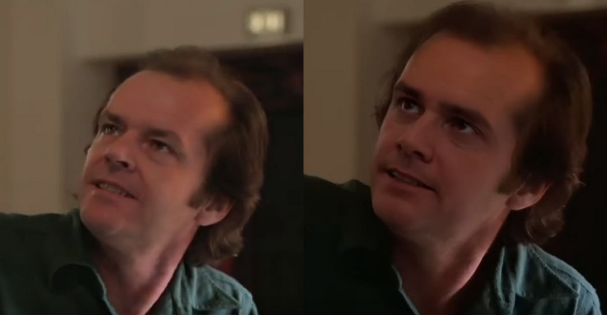

L'intelligenza artificiale, nei film, ormai si occupa un po' di tutto: dall'analisi delle sceneggiature (e dei loro potenziali incassi) al casting. Quando negli anni '70 Stanley Kubrick pensò di realizzare A.I. - Intelligenza Artificiale, adattando il racconto Supertoys che durano tutta l’estate di Brian Aldiss, storia di un bambino robot rifiutato dalla mamma poi portata a termine nel 2001 da Steven Spielberg, non immaginava che l’IA, la cosiddetta intelligenza artificiale, sarebbe entrata a far parte dell’industria cinematografica molto prima di quanto prevedesse la fantascienza. E in un modo diverso da quanto immaginato dal cinema, che l’ha quasi sempre antropomorfizzata e associata alle emozioni umane, da Blade Runner all’Hal 9000 di 2001: Odissea nello Spazio dello stesso Kubrick, da Io, Robot a Her, da Transcendence a Ex-Machina fino al recente Free Guy: Eroe per gioco.
Un esempio di quanto siano migliorati questi algoritmi è nei deep fake, quei video in cui si sovrappone il volto di un attore a quello di un altro in una scena famosa, come nel caso di Jim Carrey al posto di Jack Nicholson in Shining: in questo caso l’IA immagazzina le caratteristiche del volto nuovo e lo “incolla” su quello originale, come fosse una maschera che ne acquisisce le espressioni. “Questa tecnologia è interessante, anche se ancora immatura per reggere la qualità video e la durata degli effetti richiesta dal cinema rispetto a Youtube”, dice Ford, “ma non c’è dubbio che gli studios la stiano studiando per soluzioni di vario tipo, come quella di resuscitare attori defunti o per ringiovanire interpreti vecchi. Anche se alla base c’è sempre bisogno di una valida performance e magari ritocchi digitali da parte degli artisti”. Nonostante quanto dice Ford sia condiviso da altri esperti di effetti visivi, la tecnologia ha già fatto ingresso nel cinema mainstream: “I supervisori di effetti visivi di Welcome to Chechnya, documentario HBO che racconta il tentativo di alcuni omosessuali di fuggire dalla Cecenia dove sarebbero arrestati e torturati, ne hanno sostituito i volti, per proteggerne l’identità, con quelli di attivisti, utilizzando proprio il cosiddetto deep fake”, spiega Debevec.
Se gli algoritmi sono formule che tentano e spesso riescono a risolvere problemi complessi, è chiaro che non c’è niente di meglio per l’industria del cinema di rivolgersi ad essi nel tentativo di garantirsi il successo. A Hollywood infatti sono nate molteplici aziende che promettono di utilizzare l’intelligenza artificiale per anticipare la performance al box office di nuovi progetti: Warner Bros ha firmato un accordo con la società californiana Cynelitic, che sfrutta la tecnologia utilizzata per fare previsioni a Wall Street per analizzare il potenziale incasso di un nuovo film in base al genere, gli attori, il regista, la lunghezza e tutto quanto si può ricavare sul mercato dei dati sui gusti degli spettatori. La società belga Scriptbook, in maniera analoga a quanto fanno l’israeliana Vault AI e la svizzera Largo, propone invece un software che, avendo digerito oltre 30mila sceneggiature esistenti, comparandole col risultato al botteghino, è in grado quando ne analizza una nuova di capire se avrà successo o sarà un flop. Gli Studios non vedono l’ora di capire in anticipo come investire i propri soldi: 20th Century Fox ha lavorato insieme a Google per usare algoritmi di riconoscimento delle immagini per analizzare gli elementi contenuti in un trailer (volti, ambienti, oggetti, scene d’azione, romantiche eccetera) e compararli con quelli di altri film, per trovare elementi comuni che, in teoria dovrebbero attrarre lo stesso tipo di pubblico e studiare apposite strategie di marketing.
L’analisi predittiva a Hollywood d’altronde è sempre stata utilizzata: fino a ieri le case di produzione facevano una serie di proiezioni test prima dell’uscita di un film e in base alle risposte al questionario di campioni selezionati di pubblico decidevano se cambiare titolo, montaggio, accorciare o allungare, addirittura rigirare da capo alcune scene. Oggi però si vuole passare dall’analisi soggettiva a quella oggettiva: la startup francese Datakalab lavora per l’industria del cinema e dello streaming, e utilizza algoritmi di deep learning per analizzare i volti degli spettatori delle proiezioni test, che si prestano consapevolmente, per aggiungere ai dati ricavati dal questionario, quelli su cui nessuno può mentire, come la soglia di attenzione ma anche, in base all’espressione, felicità, sorpresa, tristezza, disgusto, paura e altre emozioni misurabili fotogramma per fotogramma. In tal modo i produttori possono per esempio tagliare o modificare una sequenza comica che non fa ridere.
La spagnola Sociograph addirittura ricava i dati sulle emozioni degli spettatori non solo dalle espressioni facciali ma anche dal cambiamento dell’attività elettrica sulla pelle individuato grazie a sensori posti sulle loro dita. La tecnologia è talmente sofisticata che per esempio si può presentare anche una sola identica scena test di un film girata con attori differenti per capire quale sia quello più gradito, influenzando così il casting.
Da uno studio del 2016 di Michael T. Lash e Khao Zhang dell’Università dell’Iowa l’IA, sta popolando Hollywood in ogni campo, stravolgendo il tessuto stesso del cinema, vale a dire quello della performance: Flawless ha messo a punto un software in grado di estrarre da un film le caratteristiche facciali di un attore per rimodellarne i movimenti della bocca. In sostanza partendo dallo studio di Christian Theobalt del Max Planck Institute, Flawelss ha sviluppato un’intelligenza artificiale in grado di estrapolare da un film il modo che un attore ha di pronunciare le parole e ricostruirlo in 3D in modo da poter cambiare i movimenti delle labbra per coincidere finalmente con il doppiaggio. “Il doppiatore recita le battute tradotte in maniera fedele all’originale, perché non ci si deve più preoccupare dei movimenti labiali originali, ed è poi il software a ricrearli artificialmente per farli coincidere col parlato”.
Fall di Scott Mann è stato il primo lavoro cinematografico pesantemente rimaneggiato da Flawless, una startup di intelligenza artificiale capace di aggiornare i visemi sullo schermo (le espressioni facciali degli attori) in base ai fonemi (i suoni che gli attori producono). Una vera e propria correzione del doppiaggio cinematografico definita dal Time una delle migliori invenzioni del 2021. il software acquisisce le nuove battute pronunciate in sala di registrazione dalle attrici e modifica la loro fisionomia adattando i movimenti della bocca alla fonetica dei nuovi dialoghi. Il risultato è stato sorprendente. Flawless toglie ogni imbarazzo, adattando non i dialoghi ma i movimenti della bocca e persino l’espressione alla traduzione più fedele. Gli americani lo chiamano “vubbing”, ovvero doppiaggio visivo.
Non è l’unico esempio di applicazione dell’intelligenza artificiale nel mondo del cinema.
Sempre in tema di manipolazione vocale-facciale, Papercup è una società capace di generare voci umane sintetiche da utilizzare in doppiaggio e voice-over. Qui l’applicazione è ancora più estrema: in teoria si potrebbe fare a meno del sottotitolo e del doppiatore perché il software mira a rendere uno stesso video disponibile in qualsiasi lingua.
E che dire di Digital Domain, colosso degli effetti visivi, che da tempo si sta specializzando nell’apprendimento automatico delle immagini degli attori quando devono svolgere compiti che di norma richiederebbero una controfigura? Fino ai casi limite di attori già defunti “risuscitati” dall’AI applicata all’ingegneria del cinema (pensiamo ai casi di Peter Cushing e Carrie Fisher nei recenti sequel di Star Wars).
La soluzione si rivela interessante per registi che vogliono cambiare la battuta di un attore in postproduzione senza dover rigirare una scena ma soprattutto per le piattaforme globali di streaming che devono rendere disponibile un film in molteplici lingue. L’adattamento diventerà ancor più convincente quando le case di produzione, con l’approvazione degli attori, utilizzeranno la soluzione sviluppata da Deepdub, startup di Tel Aviv in grado di far imparare al software ogni sfumatura della voce originale di un interprete facendole analizzare solo 15 minuti di audio, per poi restituire una traduzione in qualsiasi altra lingua pronunciata dalla medesima voce.